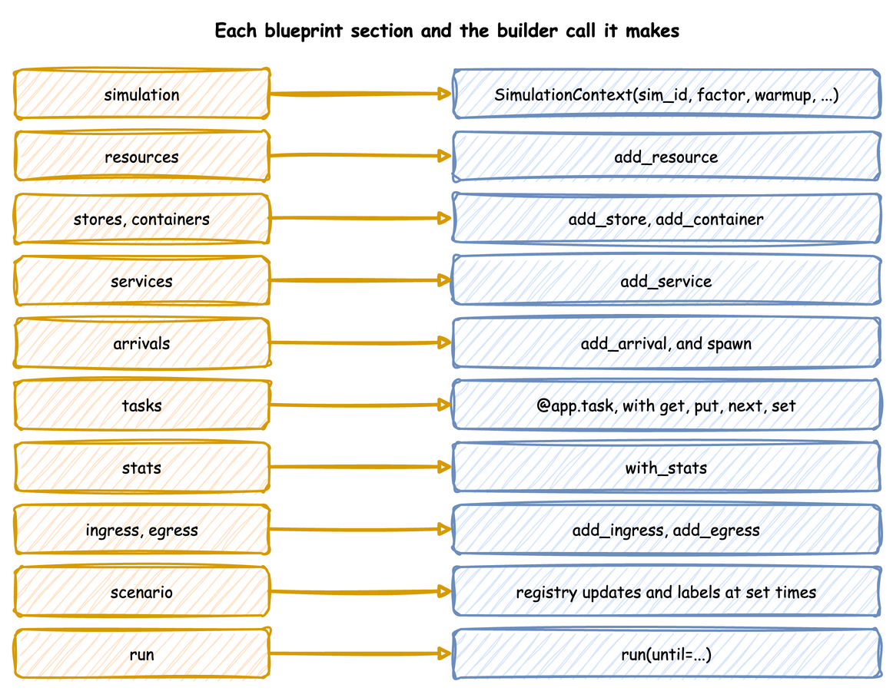
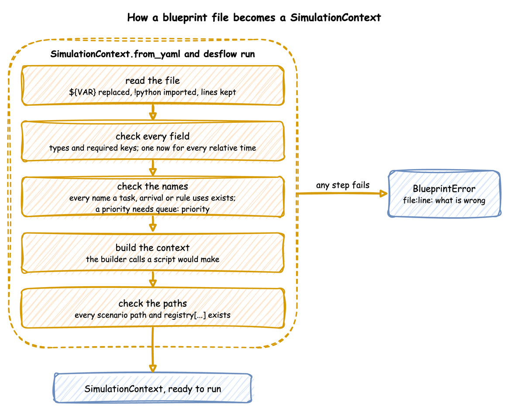
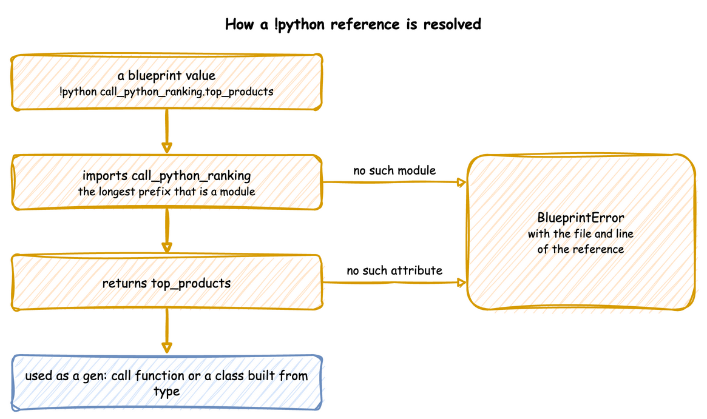

YAML Blueprints
A YAML blueprint is a simulation written as a file. This page shows how to run one, how a file is read and checked, how to change settings per environment, and where an error points. YAML Keys lists every key a blueprint accepts.
What It Is
A blueprint holds, as data, the builder calls that a Python script would make. Each section becomes the builder call of the same name: resources is add_resource, tasks is @app.task, stats is with_stats, and so on. There is no second way of building: SimulationContext.from_yaml makes those calls, in the order a script would, and returns an ordinary SimulationContext. A blueprint and a script that make the same calls produce the same simulation, and the tests check that the YAML, builder and low-level versions of every example publish the same records.

Use Python for logic that YAML cannot express. Reference it with !python, as Call Python from YAML shows. An editor completes keys and marks a misspelt key or a value of the wrong kind as you type, from the JSON Schema that desflow schema prints and this site publishes. Set Up Your Editor shows the setting.
How to Use It
Run a Blueprint
Run it from a shell with the desflow command, which the package installs. These lines use the local example:
--until takes seconds or a duration such as 10 min, 2 hours or 1 week. The command logs at INFO level. ConsoleEgress, in its default log format, writes each batch at that level, so its output is visible. A run with no seed logs the seed it drew, with the command that repeats it. An invalid file prints its errors and exits with code 1.
Or run it from Python:
| docs/snippets/pages/yaml_loading.py:from-yaml | |
|---|---|
run() calls the blueprint's run.before functions first, and uses run.until when no until is passed. The builder methods and decorators still work on the context from_yaml returns.
load_context loads a blueprint or a builder Python file by the same path, so a script that takes either kind of file needs no check of its own:
| docs/snippets/pages/yaml_loading.py:load-context | |
|---|---|
Preview the Records
desflow run FILE builds the blueprint and runs it with its own sinks until --until, run.until or Ctrl+C. It takes a YAML file, and with --sample also a Python builder file, which prints its first events the same way. A builder file otherwise runs with python FILE. Two options print the records instead of sending them to the file's sinks:
| Command | Behaviour |
|---|---|
desflow run FILE --sample N |
Prints the first N events, then stops. N is 1 or more. The run is unpaced: factor is set to 0 and go_live_at is cleared. logical_start_time and random_seed are kept, so timestamps and values look as they would in the real run. Ingress entries and run.before are skipped. Telemetry records print between the events but are not counted, and system.simulation.lag_seconds is not printed. |
desflow run FILE --stdout |
Prints every record of a normal run except the system.simulation.lag_seconds readings, which describe the wall clock, not the model. factor, go_live_at, logical_start_time and ingress are kept; run.before is skipped. |
Both replace every egress entry with one Console of format: json, and a second one for labels when the file has a when: labels entry. A JSON console writes each record as one JSON line on stdout. The run's log stays on stderr, so desflow run FILE --sample 10 | jq .value reads only the records.
A preview checks the whole file, but not the connectors it leaves out:
- The structure, keys and names of the whole file are validated.
run.beforeis skipped, because its functions prepare the real sinks, such as creating topics. A warning on stderr says so when the file has any.- The connectors a preview replaces or skips are not built, so only their
typeis checked. Theirconfigis checked only by a run that builds them, such asdesflow run FILEwithout these options.
| Combination | Result |
|---|---|
--sample with --stdout |
Allowed. --stdout adds nothing. |
--sample with --until, or a file with run.until |
The run ends at whichever comes first. When until comes first, stderr says sample ended at until with k of N events. A model that runs out of events first ends the sample too, with exit code 0 and sample ended with no events left, with k of N events. |
--sample on a file with go_live_at |
A backfill-then-live file prints its first history events. when: history and when: live have no effect, because their entries are replaced. |
--sample on a file that publishes no events |
It runs until until or Ctrl+C, printing telemetry. |
--stdout on a file with several egress entries |
One console prints each record once. Per-entry batch_size and flush_interval are dropped with the entries, and the batching section applies. |
--sample or --stdout with --replications |
Usage error, exit code 2: both print one run. |
--sample 0 |
Usage error, exit code 2. |
Command Line lists every command and option.
Times and Durations
A time in a blueprint is a number of seconds or a duration such as 90 s, 10 min, 2 hours or 1 week: run.until, a scenario step's at, simulation.warmup, a stats interval, and every time-valued distribution parameter. rate is the exception: it is a number per second. A text that is a plain number, such as 5 or 1e-3, is that many seconds. A time place refuses NaN, true and a negative number, with the place named in the error. Infinity is refused where a time must end, such as factor, initial_time, a scenario at and a segment every, and elsewhere it means no limit. factor is a number, not a time, so "2 min" is refused.
logical_start_time and go_live_at are instants: now, a signed duration from now such as -1d or -10m, or an ISO datetime such as 2026-01-01T00:00:00. Both are read against one moment, when the file is loaded, so -10m and now are exactly ten minutes apart. now, the relative forms and an ISO datetime without an offset are read in simulation.timezone, UTC by default, as Clocks and Pacing describes.
Settings per Environment
${VAR} in a value is replaced with the environment variable, so one file can serve several environments. ${VAR:-default} uses the default when the variable is unset or empty, as in a shell, and $${ writes a literal ${. An unquoted value is read as YAML reads it after the replacement, so factor: ${SIM_FACTOR:-0} is the number 0. A quoted value stays a string, so "${LIMIT:-5}" is the text 5: write a number or a boolean unquoted. An unset variable with no default stops the load, and the error names its line.
The Parquet example switches from the local disk to S3 with five variables, and Queues and Capacity runs one file with several numbers of packers.
Include a File
!include path puts a mapping from another YAML file in place, such as the settings desflow fit writes: packing: !include fitted/packing.yaml. The path is relative to the file that names it. !include {file: path, spawn: pack} adds keys to the file's mapping, such as the task an arrival spawns. The file is read with the same loader, so ${VAR}, !python and !include work in it. A file that includes itself, directly or through another file, is refused. Input Fitting shows it.
Generated Values
A value place takes a constant or a generator, a mapping with a gen key. The places are payload, attributes, set, a store's items, the value of an on: entry, a fire, a timeout and a scenario step, an interrupt's cause, and a scenario record. Generators lists every kind, and Generate Data shows them in tasks. This blueprint builds an order record from most of them. The task's own keys come first:
The rules for where a generator counts:
- Depth. In a
payload,set,attributesor scenariorecord, a mapping with agenkey is a generator at any depth. Agenkey directly underset,attributesor arecordis a field name. A nested mapping keeps any key other thangen, such as a number or a date. - Data.
{gen: literal, value: ...}keeps a mapping as data. A mapping with nogenkey in anon:orfirevalue is data, and a generator nested in it, or a nestedgeninside anon:value, is stored as written. A mapping or list in aput.itemis read as a payload is, so a generator nested at any depth is evaluated as the put is made. - Text. Text in a value place stays text.
"attr.k * 3"is that string, and{gen: expr, expr: "attr.k * 3"}evaluates it. - Files. A
rowreads its file from the blueprint's folder when the file loads. A cell of digits is a number, so leading zeros are lost: write them with{gen: format, template: "{n:05d}"}. - Seeds. Each generator draws from a random stream of its own, made from the run's seed and the generator's place in the file. Adding a field to a mapping moves no other generator's draws. Inserting an item into a list, a scenario step or an
on:entry moves the draws of the items after it. Eachfakehas its own Faker, and asampleof a service draws from the generator's own stream, so the service's draws stay as they were.
The payload of the same task uses the other kinds. Each block below is a part of the same file.
Arithmetic takes a list of arguments, each a constant or a generator: add, subtract, multiply, divide, min and max. decimals rounds the result. expr evaluates an expression whose names are generators.
| docs/snippets/yaml/generated_values.yaml:expression | |
|---|---|
lower, upper and literal give text. literal keeps a value as data, even a mapping that has a gen key.
| docs/snippets/yaml/generated_values.yaml:text | |
|---|---|
uniform and normal draw numbers, and sample draws from a distribution or from a service of the file, with the service's own parameters.
| docs/snippets/yaml/generated_values.yaml:uniform | |
|---|---|
| docs/snippets/yaml/generated_values.yaml:normal | |
|---|---|
| docs/snippets/yaml/generated_values.yaml:sample | |
|---|---|
one_of picks one value and pick picks count different values.
| docs/snippets/yaml/generated_values.yaml:one-of | |
|---|---|
| docs/snippets/yaml/generated_values.yaml:pick | |
|---|---|
weighted picks by weight, from options or from a list of value and weight.
| docs/snippets/yaml/generated_values.yaml:weighted | |
|---|---|
sequence counts from start in steps of step, starts again after loop_after values, and writes each with format.
| docs/snippets/yaml/generated_values.yaml:sequence | |
|---|---|
uuid gives version 4 or 7.
| docs/snippets/yaml/generated_values.yaml:uuid | |
|---|---|
boolean is true with probability p.
| docs/snippets/yaml/generated_values.yaml:boolean | |
|---|---|
now gives the logical time, and offset moves it.
| docs/snippets/yaml/generated_values.yaml:time | |
|---|---|
format_time writes a time in a zone.
| docs/snippets/yaml/generated_values.yaml:format-time | |
|---|---|
fake calls a method of Faker, with args and kwargs, for a locale.
| docs/snippets/yaml/generated_values.yaml:fake | |
|---|---|
format fills a template from names.
| docs/snippets/yaml/generated_values.yaml:format | |
|---|---|
switch and when choose a value from another.
| docs/snippets/yaml/generated_values.yaml:switch | |
|---|---|
| docs/snippets/yaml/generated_values.yaml:when | |
|---|---|
repeat makes a list.
| docs/snippets/yaml/generated_values.yaml:repeat | |
|---|---|
var and attr read a var and an attribute, or one path of it. param reads a live registry value, or one field of a mapping. object builds a mapping.
| docs/snippets/yaml/generated_values.yaml:var-attr | |
|---|---|
| docs/snippets/yaml/generated_values.yaml:param | |
|---|---|
| docs/snippets/yaml/generated_values.yaml:object | |
|---|---|
call runs a function of your own, with kwargs worked out first.
| docs/snippets/yaml/generated_values.yaml:call | |
|---|---|
row takes a row of a CSV or Parquet file, kept by where, chosen by the column weight, and ending as on_end says:
| docs/snippets/yaml/generated_values.yaml:row | |
|---|---|
Any generator can be null, left out, or made to give each value once:
| docs/snippets/yaml/generated_values.yaml:missing | |
|---|---|
The first records:
Names an Expression Reads
An expression reads names, calls and operators, and nothing else. The names depend on where the expression sits, and Task Flow shows them in a task:
- Run:
t(the clock),registry["..."],level.<name>,users.<name>,queue.<name>,signal.<name>.countand.processed,done_countin awhengroup, andhandle.<n>.triggered,.processed,.ok,.valueand.alivefor an opened event. - Entity and flow:
attr.<name>,payload.<field>,process.key,process.flow_name,itemanditem_priorityafter aget,arg.<name>from theargsof awaittaskbranch or aspawn,cause.<name>in an interrupt, andwait.<branch>.done.wait.suspend.valuereads in the task that was suspended, andcause.<name>in a task thaton_interrupt_runreaches. - Task that routed here:
upstream.<field>, andupstream.statusandupstream.reasonin a task thaton_fail,on_renegeoron_balkreaches. - Calls on the model:
held(r),waiting(r),putting(x)andgetting(x)give lists of mappings with anentity. A resource entry also hasrank,time,preempt,keyandsince, a store put hasitem, and a container hasamount.running(task[, cond])is a count, andpeek()is the time of the next event. - Forms:
[...],{...}, a list comprehension with onefor, subscripts and slices,is None,in, and dotted reads at any depth.payload['total']is refused becausepayloadis not a name by itself: writepayload.total.attr["class"]reads an attribute whose name Python keeps as a word. - Functions:
len,sum,sorted,range(at most 1,000,000 items),any,all,str,int,float,bool,abs, one-argument and many-argumentminandmax,round,floor,ceil,sqrt,exp,log,log10,sin,cos,tan,has(attr.x), andget_key(mapping, key, default),set_keyanddrop_key.
The limits are these. One reading that makes more than 1,000,000 items in all is a named run failure. % on text and ** with an integer power above 10000 are refused, and so is ** with a negative base and a fractional exponent, round(x, -n) with a very large n, and an expression nested more than 200 levels. Text is allowed in comparisons, indexes, list and mapping entries, + and the key functions. prod and sumprod are reserved for a later release, and a var, loop name or generator names entry cannot take them or any other name an expression already uses.
Run on Your Own Environment
simulation.environment runs the model on your own subclass of DynamicRealtimeEnvironment, named with !python, as SimulationContext(environment=...) does in Python, for example environment: !python my_model.TracingEnvironment.
A subclass that overrides __init__ takes **kwargs and passes them on, because desflow builds it with the arguments it builds its own environment with. One that overrides schedule or step calls super(). When a script steps outside run(), step runs once per model event. Inside run(), it runs once per event, desflow's own events included.
In a blueprint, the class is named under simulation. CountingEnvironment in endings_logic.py counts the events the run processes:
| docs/snippets/yaml/task_endings.yaml:environment | |
|---|---|
How It Works
from_yaml makes the builder calls for you, so a blueprint gets everything the builder does, and it checks the whole file before anything runs. A file is read and checked in five steps, and any step that fails stops the load with a BlueprintError before anything runs:

- Read the file.
read_documentreads it with a subclass ofyaml.SafeLoader.${VAR}is replaced while each scalar is read,!python module.attributeimports the module and returns the attribute,!include pathreads a mapping from another YAML file relative to this one, and every key's line is kept in a source map. Every other node is built asyaml.safe_loadwould build it. A key written twice in one mapping is refused at its second line, and the error names both lines. - Check every field. The document is validated against the
Blueprintmodel. Unknown keys are refused, so a misspelt key is reported rather than ignored. Every distribution is built as the builder would build it, so a parameter out of range,true, NaN, or one the family does not take, is refused here. Every expression place is checked at its line, a capacity below 0 is refused, and a refusal under a field that takes a name or a mapping reports only the member that matches, with no type or class name. Every relative time is read against onenow. Aspawnafterand afireaftermust be above 0.simulation.environmentmust be a subclass ofDynamicRealtimeEnvironment. All validation errors are reported at once. - Check the names. Each name in the file must exist and fit where it is used:
- Every service, resource, store, container and next task that a task names exists.
- Every task's
spawnandon:spawn names a task that does not share an arrival's name. - A
subscribenames a task or a signal. - An
on:fire names a signal, and anon:interrupt names a task. - An
on:fire ... fromnames a signal or a task. The task must run on the same entity as theon:list. For a task's list, that is the entity of the task that holds the list. For a signal's list, it is the entity of a task that fires the signal. - Every
level.<name>in an expression names a store or a container, and everyusers.<name>andqueue.<name>names a resource. - A name is used in one of resources, stores, containers and signals, and holds no dot or space.
- A task's
priorityneeds a resource withqueue: priority. - Resources and stores have whole-number capacities.
- An
on:fire withurgent,afterorprioritynames a signal withonce: true. Apriorityis a whole number and is refused withurgent. - A
failis refused withfrom, anddefusedneedsfail. Afail_reasonneeds afailcondition. - A
listennames one ofsignalandhandle, anindexneeds ahandle, and the signal or handle is declared. - A
whenor a generatorvaluein a signal'son:that readswait.<branch>is refused, because a signal's entries run with no wait in scope. So is aneach.indexoreach.valueread outside the branch of aneach. simulation.environmentnames a subclass ofDynamicRealtimeEnvironment.
- Build the context. The builder calls are made in the order a script would make them: the simulation, ingress, egress, batching, stats, resources, stores, containers, variables, services, arrivals, tasks, arrival loops, processes, telemetry and the scenario.
- Check the paths. The parameters are registered into a scratch registry, with the code that the run uses. Every scenario
path, and everyregistry["..."]that an expression reads, is then checked against the paths the run will have. Every scenariovaluemust convert to the type its path holds.
!python module.attribute imports module and returns its attribute: a function, a class, a dictionary or a constant. The longest prefix that is a module is imported, and the rest is read as attributes. The folder of the YAML file is added to the front of sys.path, so a module beside the blueprint is found from any working directory. ${VAR} is replaced inside a reference too. Every reference is resolved when the file is loaded, so a wrong one fails before the run starts, with the file and line:

Stability and Limits
An error at any step is mapped back to its line through the source map. A time in a message reads 5 for a whole number, and a number in {now:g} form has six significant digits, so 1000000 reads 1e+06:
| docs/snippets/pages/blueprint_errors.py:load | |
|---|---|
A blueprint covers configuration, including several resources per task (resource: [picker, bench] and keep), preemption (preempt: true) and breakdowns (breakdown:). These stay in Python:
- Values computed per entity. A mapping payload is a constant, apart from three values added for each entity: the task id that
id_fieldadds, the attributes thatattributesadds, and the item agettook, whichitem_fieldadds. Random choices, derived fields and state carried between events are a Python payload or process, as Call Python from YAML shows. A task'spriorityand agetorputamount can be an expression.nextrules read attributes, payload fields, levels, registry values, the item agettook (item.<field>), the wait's branches (wait.<branch>.done) and signals (signal.<name>.count), as Task Flow describes. - Keys described where their subject is.
seize,release,open,canceland handles are in Task Flow and Tasks and Processes.batchis in Serve Entities Together.familyandmembersare in Resources.{of, key}and{of, lowest}references,firewithfail, andlistenare in Signals and Waiting.lookup,previous,upstreamandaggregateare in Task Flow.breakdown.clockis in Priority and Preemption. The arrival keys are in Arrivals and Services, andrun.segments,stepsandsyncin Run Length. - Entity keys. An arrival's
keyand a task'skeytake text, a number or a generator, and the default is<arrival>-<n>. Only a key written as a Python function is builder only. - One simulation per file. A blueprint has one
sim_id.!includeputs a mapping from another file in place, such as fitted settings, but not a second simulation.
Security
A blueprint with no !python references is read entirely by yaml.SafeLoader, and loading it imports only the connector modules its type entries name. An !include reads another YAML file the same way and imports nothing itself. A file that references Python, directly or in a file it includes, runs the imports it names. Such a file needs the same trust as a Python script: run blueprints only from people whose scripts you would run. Every other node is built by yaml.SafeLoader, and only !python and !include are added to it.